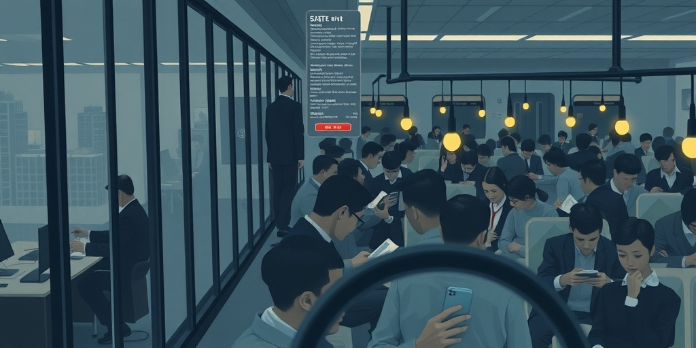
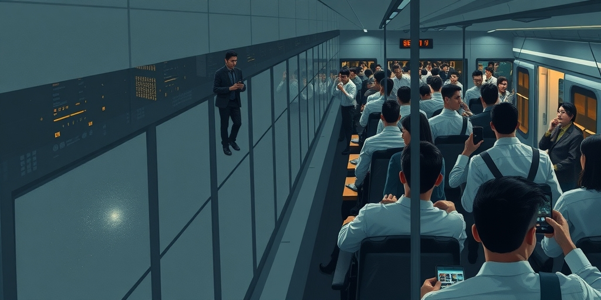

小汪老师的成长洞察 · 属于你的成长专栏
你爱的，可能只是一面被精心打磨的镜子。几十年来，我们从银幕到手机屏幕，系统性地接收着一个信息：动物是另一种形式的人。这种爱，正在悄悄扭曲我们的判断力，甚至付出生命。

你看过迪士尼的《狮子王》吧。辛巴有朋友，有责任，会为父亲复仇。这就是问题的起点。好莱坞最早开始给动物配音、赋予人格。它们不再是纯粹的生物，成了承载人类故事的演员。
后来，自然纪录片也学会了这一套。为了收视率，猎食的血腥被淡化，母爱的镜头被放大。一只熊妈妈保护幼崽的片段，配上煽情音乐和解说，瞬间成了千万播放量的“感动”故事。掠食和被捕食的自然法则，被包装成了家庭伦理剧。我们看的不是生态，是披着毛皮的肥皂剧。
社交媒体时代，算法加剧了这种扭曲。猫咪一个“生气”的表情，海豚“微笑”的弧度，都能引爆流量。我们点赞，转发，强化了同一种认知：看，它们和我们一样，有情绪，有善意。这份爱，建立在商业和流量的共同生产之上。
这里有一个容易掉进去的陷阱：觉得只有没文化的人才会被动物视频洗脑。大错特错。一个生物学博士，也可能在抖音上为一只“求抱抱”的小熊猫心都化了。认知偏差，和学历无关，和信息环境有关。
无论你是博士还是工人，你成长过程中看的可能是同一部《小鹿斑比》，刷到的是同一批卖萌的动物短视频。媒体信息是统一的配方。区别在于，有些人会反思这种配方，而有些人不会。高学历者有时更危险，因为他们会用自己的知识，去合理化那种情感投射。
一个受过高等教育的人，可能会激烈反对在科学实验中使用动物，理由是“它们会疼，和人一样”。这种论证的起点，已经默认了“和人一样”是道德判断的基石。他忘了，或者没学过，伦理和生态是两套不同的系统。情感上的平等认知，压过了对客观规律的尊重。
这种错位的爱，是有代价的。最小的代价是罚款，因为你在自然保护区私自投喂。中等的代价是受伤，因为你觉得眼前的鹿很温顺，想摸摸它的角。最大的代价，是命。每年，都有人因为坚信“动物不会伤害好人”，死在熊、野猪或鲨鱼手里。
把镜头拉远，看社会层面。反对基于科学的野生动物种群数量控制，认为那是“屠杀”。在城市里无节制投喂流浪猫鸟，导致局部生态失衡，本土鸟类数量锐减。极端动物权利主义者冲击医学实验室，阻挠能够拯救无数人命的医疗研究进展。
最深层的扭曲在于价值排序。当一个人认为“动物的生命比人的生命更纯洁”，或者为一只狗的死难过，超过为一个陌生人的死难过时，这已经不是爱动物了。这是用动物作为标尺，来贬低和疏离人类社会。爱的边界，彻底模糊了。

真正的保护，不是因为它们可爱，而是因为它们不可或缺。顶级捕食者控制食草动物数量，保护了植被。秃鹫是自然界的清道夫，防止疫病传播。蜜蜂授粉，维系着农业的命脉。保护是基于生态系统功能，是一道严谨的计算题。
这意味着，理性的保护必然包含取舍。对于破坏生态的入侵物种，必须清除。对于数量泛滥威胁其他物种或人类安全的动物，必须进行科学管控。当野生动物进入人类生活区域造成冲突，解决方案是基于规则的隔离与管理，而不是一厢情愿的“和谐共处”。
同样，理性的保护也坚决反对滥杀。不是因为觉得动物“可怜”，而是因为滥杀会破坏生态平衡，最终反噬人类自身。我们的态度，应该是园丁式的：了解整个花园的运作规律，修剪、培育、移除，一切为了花园的健康。而不是宠物主人式的，只想拥有一朵完美的花。
写给你的话
爱一个东西，是努力去理解它的本质，而不是把它捏成你需要的样子。当我们给一只狼穿上羊皮袄，声称它温顺时，我们到底是在尊重它，还是在满足自己对“美好”的想象？或许，最高的尊重，是承认有些野性与距离，永远不该被消除。
参考资料
[1] 5 weird things people do in love and why, as per psychology (Times of India) https://timesofindia.indiatimes.com/relationships/5-weird-things-people-do-in-love-and-why-as-per-psychology/photostory/131070719.cms
[2] Psychology Says This Quiet Trait Is A Sign Of High Emotional Intelligence (Times Now) https://www.timesnownews.com/lifestyle/relationships/psychology-says-this-quiet-trait-is-a-sign-of-high-emotional-intelligence-article-154467022
小汪老师的成长洞察 · 属于你的成长专栏